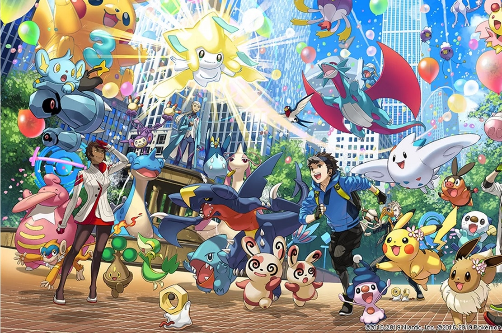

Pokemons
Musiques
Lieux
Votre top 10
Pokemons
Musiques
Lieux
Votre top 10
Sur ce site nous allons vous presenter nos differents top 10 de Pokemon.
Il existe plus de 1000 pokemons, il est donc assez difficile de s'y retrouver , nous avons alors decidé de vous montrer notre top 10 de nos pokemons favoris respectifs.
Cliquez ici pour y acceder!
L'univers de Pokemon est un univers florissant de musiques. Nous vous proposons alors un Best-of de nos musiques favories.
Cliquez ici pour y acceder!
Au cours de l'aventure nous avons l'occasion de se balader dans un grand nombre de lieux memorables, voici notre selection de ceux qui sont le plus memorables
Cliquez ici pour y acceder!